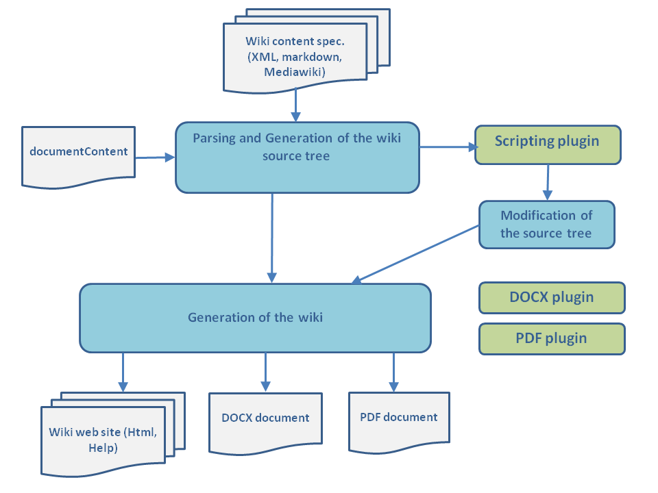

Algorithm
The docJGenerator project allows to generate a html site with a list of XML files defining a documentation. It allows to produce an offline wiki-like site. It is also possible to configure the tool to parse files with the mediawiki syntax or the markdown syntax.
The algorithm for creating the wiki content is the following:
Usage
To use the docJGenerator tool, you have to double-click on the Jar file of the application (or performjava -jar docGenerator.jar if you did not associate the Java application to jar files), and configure the generator: - The input directory or directories where the input XML files and image resources are to be found. See root files and packages if you want an explanation on how to use the generator with more than one root directory
- The output directory where the output web site must be generated
- (optional): an alternate index file to use if there are more than one input directory
- (optional): a configuration file (see configuration file)
- It is possible to define a properties file defining key/value string replacements in the text
- The value for the maximum number of files to be generated in one directory
Algorithm
The algorithm for creating the wiki content is the following:
- The tool parser parses the content of the wiki source ( XML markup, markdown markup, or mediawiki markup and creates a wiki source tree model containing all the articles and resources definition
- The wikiContent parameter allows to filter the content of the output and to structure the results for output formats which use chapters
- Optionnally, the Scripts plugin is called to modify the wiki source tree model
- Depending on the selected output format, the relevant writer generates the output content
See Also
- Wiki source tree: This article presents the concept of the wiki source tree
×

Categories: general